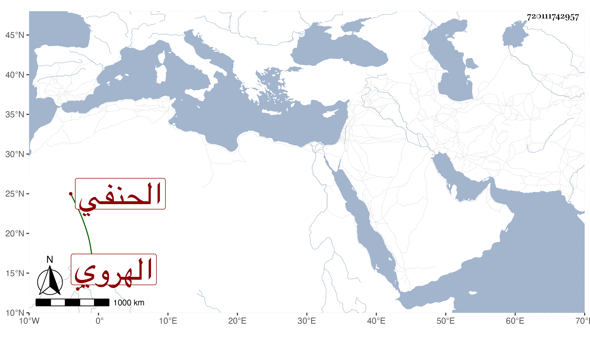

0902Sakhawi.DawLamic.ITO20230111-ara1.EIS1600.720111742957
Biography ID: 720111742957
425
محمد الشمس الهروي الحنفي أخو علي . كانت عنده فضيلة وله اشتغال كثير ولكنه كان بطيء الفهم سيئ الأخلاق لم يصل إلى رتبة أخيه وقد امتحن في فتنة تمر وعذب أنواع العذاب ثم خلص وكذا ابتلي بهم في الوقعة الثانية ثم قيل أنه قتل ، قاله التقي الكرماني وكتبته هنا حدسا .
